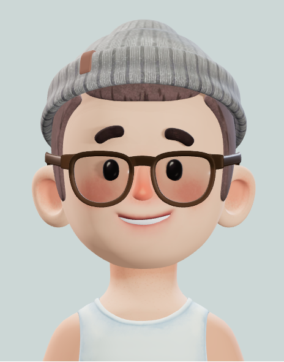

|  |
Martin était un marin expérimenté qui avait navigué sur les mers du monde entier. Il était passionné de voile et de tout ce qui touchait à la mer. Un jour, il décida de quitter la marine pour créer sa propre marque de vêtements inspirée de ses voyages. Il appela sa marque "Le Petit Capitaine" en hommage à sa passion pour la voile.Martin était un marin expérimenté qui avait navigué sur les mers du monde entier. Il était passionné de voile et de tout ce qui touchait à la mer. Un jour, il décida de quitter la marine pour créer sa propre marque de vêtements inspirée de ses voyages. Il appela sa marque "Le Petit Capitaine" en hommage à sa passion pour la voile.Il commença à concevoir des vêtements confortables et résistants pour les marins et les amateurs de voile, en utilisant des matériaux de qualité supérieure comme la toile de voile et le coton résistant à l'eau. Il ajouta des détails réfléchissants pour une meilleure visibilité en mer et des poches pratiques pour ranger les outils nécessaires.Il a lancé sa marque avec succès et ses vêtements ont rapidement gagné en popularité auprès des marins professionnels et des amateurs de voile. Il a également étendu sa gamme pour inclure des vêtements de plage et des accessoires.Avec le temps, la marque "Le Petit Capitaine" est devenue l'une des marques les plus respectées dans l'industrie de la voile, et Martin est devenu un nom bien connu dans le monde de la voile. Il continue de voyager et de s'inspirer de ses expériences pour créer des vêtements innovants et fonctionnels pour les amoureux de la mer. |